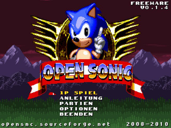
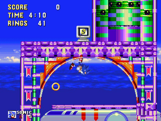
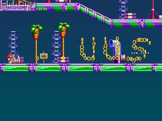

Open Sonic
Dieser Artikel wurde für die folgenden Ubuntu-Versionen getestet:
Ubuntu 14.04 Trusty Tahr
Zum Verständnis dieses Artikels sind folgende Seiten hilfreich:
Open Sonic ist ein Spiel, welches auf dem Universum von Sonic the Hedgehog basiert. Im Gegensatz zum Original ist es kein reines Jump'n'Run-Spiel sondern beinhaltet auch strategische Aspekte. Man muss mit allen drei Charakteren das jeweilige Level in Kooperation lösen. Jeder Charakter hat Vor- und Nachteile, welche es geschickt zu nutzen gilt.
|  |  |
| Menü | Spielszene |
Installation¶
Von der Projektseite 
 das aktuelle Archiv opensnc-linux-VERSIONSNUMMER.tar.gz herunterladen und entpacken [3] z.B. nach ~/Spiele. Über
das aktuelle Archiv opensnc-linux-VERSIONSNUMMER.tar.gz herunterladen und entpacken [3] z.B. nach ~/Spiele. Über opensonic_bin kann das Spiel gestartet [4] werden. Alternativ einen Menüeintrag [5] vornehmen.
Nach erfolgreicher Installation kann über "Partien → Einfuehrung" ein Tutorial gestartet werden, welches in die Spielprinzipien einführt.
Zusatzlevel¶
Zusätzliche Level können in das Installationsverzeichnis kopiert werden. Bevorzugt sollte ~/.opensonic/levels Verwendung finden.
|  |
| Editor |
Leveleditor¶
Über
F12 kann innerhalb des Spiels der Leveleditor aufgerufen werden. Im Wiki erhält man detaillierte Informationen um Eigenkreationen zu realisieren.
| Leveleditor | |
| Taste(n) | Funktion |
| F12 | Quit |
 / /  | Kamera bewegen. |
|
Strg + /
Strg + | Kamera schneller bewegen. |
B /
N bzw.  (Mausrad) (Mausrad) | Nächstes Objekt auswählen. |
 | Objekt platzieren. |
| /
P | Objekt aufnehmen |
 | Objekt entfernen |
|
Strg + | Spawnpunkt ändern. |
| Strg + Z / Strg + Y | Rückgängig / Wiederholen |
| G | Grid (de)aktivieren |
Problemlösungen¶
Spielsprache¶
Über "Options → Change language → 2. Deutsch" kann die Sprache umgestellt werden.
Tastenkürzel¶
| Tastenkürzel | |
| Taste(n) | Funktion |
| | Steuerung |
| Sprung | |
| ⏎ | Pause |
| Strg | Teammitglied wechseln |
| Esc | Beenden |
| Druck / = | Bildschirmfoto erstellen. Diese werden im Installationsverzeichnis oder im verteckten Ordner ~/.opensonic unter screenshots abgelegt. |
| F6 | Joystick ignorieren / wiederherstellen. |

Infobox¶
| Open Sonic | |
| Genre: | Jump'n'Run |
| Sprache: |       |
| Veröffentlichung: | 2008+ |
| Entwickler: | Open Sonic Team |
| Systemvoraussetzungen: | - |
| Medien: | Download |
| Strichcode / EAN / GTIN: | - |
| Läuft mit: | nativ |
- Erstellt mit Inyoka
-
 2004 – 2017 ubuntuusers.de • Einige Rechte vorbehalten
2004 – 2017 ubuntuusers.de • Einige Rechte vorbehalten
Lizenz • Kontakt • Datenschutz • Impressum • Serverstatus -
Serverhousing gespendet von